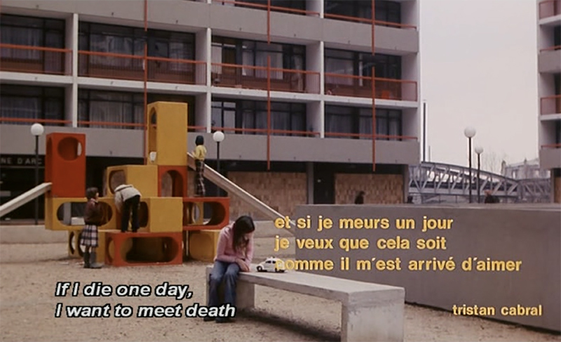

When it hurts too bad, Mama,
I’ll lie down in the grass
I’ll take a little knife
And stick it in my heart.
No, you won’t, darling.
One day it’ll hurt so bad,
You’ll know there’s no help.
You’ll take your knife.
Tears will stop.
Everything inside you will stop.
But you’ll stand up.
///
You’ll take your knife.
Tears will stop.
Everything inside you will stop.
But you’ll stand up
And smile at your friends.
You’ll greet your teachers
And use your knife to sharpen a pencil.
At first the lead will break often.
But soon you’ll know how hard to press.
It will all be like that
Till you become a man like the rest,
Bruised so badly, they’re numb.
///

If I die one day,
I want to meet death
As I have met love.
Tristan Cabral
///
1/2, 1/2